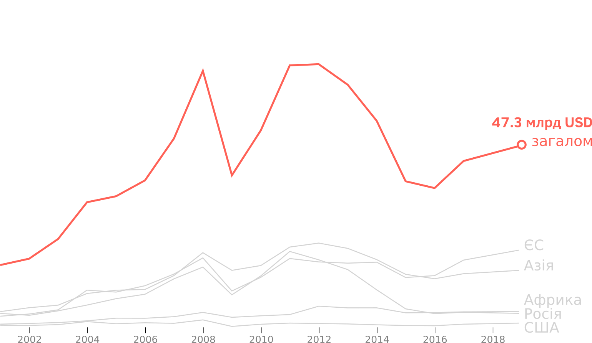
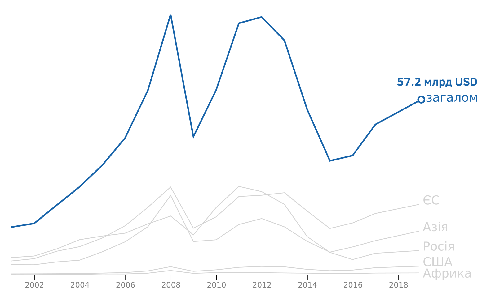
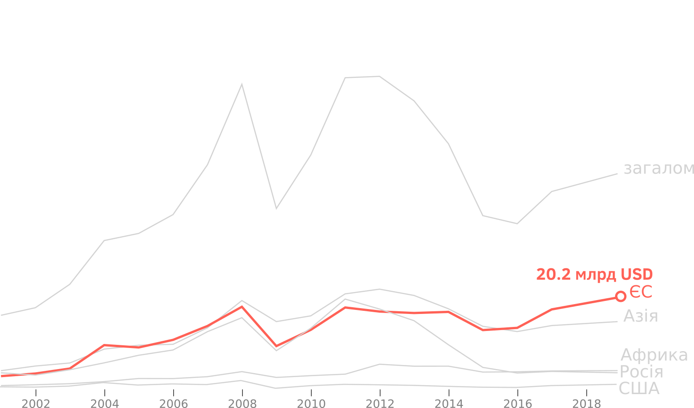
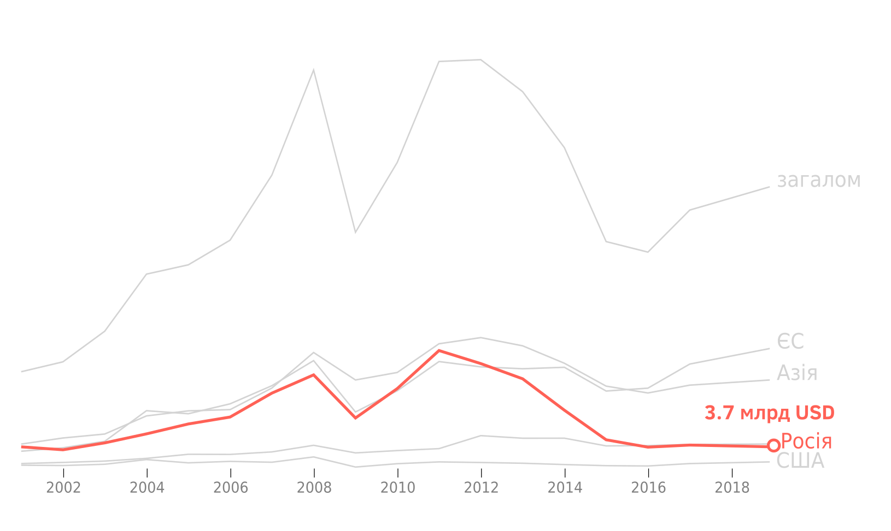

Якщо поглянути на загальні графіки українського експорту та імпорту товарів, можна помітити кілька загальних тенденцій. З 2002 року відбувається зростання обсягів як експорту, так і імпорту. Але цей тренд не є безперервним: український експорт та імпорт пережили декілька пікових зростань та значних падінь.
Український експорт. Динаміка, 2001-2018 рр.
Топ продуктів українського експорту, 2001-2018 рр.
Один із піків росту експорту українських товарів припав на 2008 рік. Вдала світова цінова кон’юнктура на основні українські експортні товари (а це переважно зернові, руда та дешевий метал) у 2006–2008 роках дозволили продавати за кордон більше. Водночас, тоді в країну щедрою рікою ринув потік валюти ще й через фінансовий бум у США. Транснаціональні банки з легкістю роздавали кредити по всьому світу, в тому числі й українським колегам, а ті вже позичали народу. Як правило, для купівлі чогось красивого й корисного: квартир, машин, пилососів і тому подібного.
Збільшення обсягів валюти та можливість взяти кредит призвели до споживчого вибуху. Попит швидко зростав – у першу чергу, на імпортні товари. У передкризові роки імпорт зростає просто скачкоподібними темпами. В країну масово завозяться перш за все легкові автомобілі, а також мобільні телефони, різноманітна побутова техніка. З 2006 року можна побачити постійне перевищення імпорту над експортом, найбільший дефіцит торгового балансу припав на перший квартал 2008 року. Далі була криза.
Український імпорт. Динаміка, 2001-2018
Топ продуктів українського імпорту, 2001-2018 рр.
Орієнтованість української економіки на експорт зіграла з нею злий жарт. За кордоном купувати стали менше, а всередині країни попит завжди був низьким. Українські експортери зазнали чималих втрат. Відбувається значне скорочення як експорту, так і імпорту. Найбільше падіння відбувається в 2009 році.
Після цього українська економіка оговтується й поновлює зростання. 2010–2011 роки – це час, коли може здатися, що Україна повертається до подальшого стрімкого росту. Покращення світової цінової кон’юнктури, поява у топах українського експорту продукції аграріїв – все це сприяло встановленню нового рекорду українського експорту. Таким великим, як у 2011 році, він вже більше не буде.
Вже в 2012 році можна спостерігати зменшення обсягів експорту та імпорту. З початком українського-російського конфлікту в 2014 році падіння стає стрімкішим. І справа тут не лише в різко розірваних економічних зв’язках між Україною та Росією, але й у тому, що на окупованих територіях залишилась низка потужних промислових об’єктів, які виробляли експортну продукцію. Проте в 2015 році темпи падіння уповільнюються, й уже в 2016 році ми бачимо помірне зростання обсягів експорту та імпорту, яке триває й сьогодні.
Географія
Основними зовнішньоторговельними партнерами України є Євросоюз, країни Азії та Росія. Цікавим для України також є ринок країн Африки. Уважно переглянувши графіки, можна помітити, як з часом змінювалася вага тих чи інших торговельних партнерів України. Так, до 2008 року основними партнерами країни були Євросоюз та Росія, проте криза внесла свої корективи. В той час як експорт до Євросоюзу та Росії переживав різке і суттєве падіння, падіння експортних потоків до країн Азії не було настільки відчутним. Частково це пояснюється асортаментом українських товарів, які поставлялися в цей регіон – передусім мова йде про аграрну продукцію.
Український експорт до ЄС. Динаміка, 2001-2018 рр.
Європейський союз. Топ продуктів експорту, 2001-2018 рр.
А вже в 2015–2017 роках ми стали свідками справжньої торговельної «революції», коли відбулася глобальна переорієнтація України з російського ринку та ринків країн СНД на ринки Євросоюзу та країни Азії й Африки. Так, ринок Євросоюзу й до того був пріоритетним для України, і зараз у нас все ще ведеться активна торгівля деякими товарами з Росією. Але саме, якщо так можна сказати, «ментальна» переорієнтація з російського ринку відбулася в цей час і стала одним зі знакових трендів української зовнішньоекономічної діяльності. А ринок ЄС – це освоєння стандартів якості та нових технологій. Тут продавати важче, ніж в Росії чи Казахстані.
Логічно було б припустити, що зменшення обсягів товарообороту між двома країнами почалося з початком російської агресії проти України, але це не так. Починаючи з 2011 року ми спостерігаємо повільне, але невпинне зменшення обсягів експорту українських товарів до Росії. Російський ринок ще до війни почав закриватися від українського експорту. Згадаймо постійні обмеження, які вводила Росія на українські товари. Вже тоді проти нас почали гібридно воювати, але ми ментально й політично не хотіли цього помічати. Та життя змушувало бізнес переорієнтовуватися.
Український експорт до Росії. Динаміка, 2001-2018 рр.
Росія. Топ продуктів експорту, 2001-2018
Значне падіння українського експорту до РФ відбулося протягом 2014 року. Росія введе ряд загороджувальних заходів, які в першу чергу стосувалися української аграрної продукції. Україна також заборонила ввезення певних російських товарів – зокрема, добрив.
І… ніякої катастрофи не сталося. Українські експортери показали, що можуть переорієнтовуватися на інші ринки. З 1 січня 2016 року набула чинності Угода про зону вільної торгівлі України з ЄС. Це передусім широкомасштабна торговельна угода, спрямована на зменшення та скасування тарифів на експортовані та імпортовані товари. Відтоді й дотепер обсяги торгівлі з Євросоюзом невпинно зростають. Повільно, але також зростають обсяги торгівлі з країнами Азії.
Втім, повного припинення торгівлі з Росією не відбулося. Українські товари далі поставляються до Росії, а російські товари завозяться до України. Часто мова йде про поставку продукції з більшою доданою вартістю, ніж у тієї, яка поставляється до країн Європейського Союзу та країн Азії й Африки. Але здебільшого це залишки різних ще радянських технологічних виробництв. Й досі маємо технологічну прив’язаність певних українських виробників до російського ринку.
З одного боку, їхнє виробництво не може функціонувати без певних російських деталей. З іншого – їхня кінцева продукція за своїми технологічними характеристиками може бути конкурентоспроможною лише для російського ринку. Проте прив’язка українських компаній до цих ринків, небажання переорієнтовуватися на інші призведе до подальшого технологічного відставання цих компаній. В той же час, обсяги подібного експорту та імпорту в рази менші від того, що було в довоєнний період. Тому і тут можна побачити досить-таки однозначну тенденцію – глобальну переорієнтацію української економіки з російського ринку на інші.
Асортимент
загалом, експорт
Загальний графік експорту наших товарів майже повністю повторює графік експорту одного з найбільш знакових товарів – металургійної продукції. Саме українська металургія стала одним із драйверів зростання українського експорту, починаючи з 2002 року. Піковим роком для таких поставок став 2007 рік. Саме тоді для металургів склалася вкрай сприятлива світова кон’юнктура. Обсяги металу били чергові рекорди. Звичайно, мало хто звертав увагу на те, що сортамент вітчизняної металопродукції дуже звузився, а основним товаром, що йшов на експорт, стали напівфабрикати, так звані сляби, тобто заготовки з металу, які вже на закордонних, більш технологічних заводах перетворювалися на різного роду металеві листи та інші вироби.
З 2009 року знову спостерігається поступове нарощування виробництва української металургії та зростання обсягів експорту. Проте вже з 2011 року почнеться нова фаза зменшення.
Одночасно з «просіданням» металургії, все гучніше про себе заявляє ціла група українських товарів, які належать до зовсім іншої категорії. Мова йде про аграрну продукцію – насамперед, зернові, соняшникову олію. Ця продукція показала себе стійкішою до світових економічних катаклізмів, обсяги її експорту лише нарощуються рік від року.
загалом, експорт
Так, Україна сьогодні посідає перше місце по експорту до Євросоюзу пшениці. Певні обмеження на експорт української пшениці накладає той факт, що мова йде про пшеницю м’яких сортів, в той час як у Європі більш затребованою є якісніша й дорожча пшениця твердих сортів. Проте Україна має великі ринки збуту своєї продукції в Азії та Африці, зокрема, Єгипті, Бангладеш, Індонезії.
загалом, експорт
Також Україна – один із лідерів виробництва рослинних олій, зокрема, соняшникової олії. Це кращий імпорт, ніж зерно, бо в нього більша додана вартість. Традиційними ринками збуту української олії є Євросоюз та країни Азії, зокрема, Індія та Китай. Основним конкурентом України і по зернових, і по олії на ринках Азії та Африки виступає Росія.
загалом, експорт
Водночас, у структурі експорту української сільськогосподарської продукції відбулася своя внутрішня революція. Україна перетворилася на експортера не лише рослинної продукції, а й потужного експортера продукції тваринного походження. Мова йде, в першу чергу, про куряче м’ясо. Поряд із такими традиційними товарами, як зерно та олія, відбулося нарощування обсягів експорту курятини. Починаючи з 2010 року, виробники невпинно нарощують обсяги експорту, за останні 5 років експорт курятини зріс у декілька разів. Основними ринками збуту є Євросоюз, країни Азії та Африки. При цьому, українські експортери не задовольнилися просто експортом, а почали купувати потужності для переробки своєї продукції безпосередньо на території ЄС. Курятина – це ще кращий експорт, ніж олія, бо додана вартість тут ще більша.
загалом, експорт
Знайшла Україна свою нішу й на такому цікавому ринку, як ринок меду. Проте, в динаміці експорту українського меду, як в одній краплі, відбиваються всі проблеми невеликих українських експортерів. З одного боку, Україна є одним із потужних виробників меду і має всі підстави претендувати на відповідне місце в світовій торгівлі. З іншого – саме велика кількість та невеликі розміри українських виробників ускладнюють просування їхньої продукції на світових ринках. Тому, попри перспективність та заманливість цього ринку для українських пасічників, поки що не можна простежити безперервного висхідного тренду в експорті цієї продукції.
Росія, імпорт.
Ще одна традиційна складова українського експорту та імпорту – неорганічні та органічні хімічні речовини, добрива – переживають різновекторні зміни. З одного боку, прийняття низки загороджувальних заходів, зокрема, антидемпінгових мит щодо добрив з Росії, призвело до зменшення обсягів їх імпорту. З іншого ж боку, за низкою позицій Україна продовжує залишатися залежною від імпорту певних хімічних речовин із Росії, наприклад, аміаку чи вуглецю.
Якщо взяти сегмент виробництва азотних добрив – Україна виробляла їх не лише для внутрішнього ринку, а й на експорт. Проте на обсягах виробництва добрив відбилося скасування пільгових цін на природний газ, який складає значну частку в собівартості їх виробництва. Негативно на виробництві Україною мінеральних добрив та хімічних речовин відбилася також втрата такого потужного виробника, як концерн «Стирол», який опинився на окупованих територіях.
загалом, експорт
З упевненістю можна стверджувати, що прийнятий Верховною Радою мораторій на експорт лісу-кругляку ніяк не вплинув на обсяги експорту української деревини. На графіку експорт деревини, виробів з деревини та деревного вугілля зростає весь час – попри прийняті обмежувальні заходи на експорт українського кругляка.
Зростання експорту відбувалося за рахунок збільшення поставок товарів з деревини низького ступеню обробки, високих обсягів поставок деревного вугілля. Медіа та правоохоронці постійно повідомляли про випадки незаконного вивезення лісу-кругляку під виглядом інших товарних позицій.
Загалом, за ці декілька десятків років українська економіка однозначно довела, що в критичних умовах може перебудовуватися й орієнтуватися на нові ринки. Після кожного наступного форс-мажору наша економіка відновлювалася та ще більше нарощувала обсяги експорту-імпорту. Українська експортери показали, що вони є конкурентними й здатними займати нові ніші на світових ринках.
Та структура українського експорту загалом залишається однотипною: велика кількість сільськогосподарської продукції, продукції металургії, і зовсім невелика частина більш високотехнологічної продукції. Вочевидь, тепер перед українськими експортерами та урядом, який має стимулювати бізнес у правильному напрямку, стоять глобальні завдання – налагодження виробництва та опанування ринків продукції з більшою доданою вартістю.
А тепер все це разом.
Дивіться інтерактивну графіку. Досліджуйте загальну динаміку експорту та імпорту до країни Європи, Азії, Африки, Росії та США, а також головні продукти експорту та імпорту.
Торгівля зі світом, 2001-2018
Наведіть мишею на графік, аби подивитись на цифри:
Загалом
Європейський Союз
Азія
Росія
США
Африка
Під країнами ЄС за кожен рік рахувались ті країни, які входили до ЄС станом на поточний рік. Зростання торгівлі до ЄС на графіках частково повʼязано з цим, адже кількість країн - членів ЄС суттєво збільшилась протягом останніх 20 років
Країни Азії на графіках за винятком Росії та Кіпру. Останній входить до складу ЄС і врахований серед країн-членів.